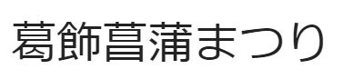

長野県安曇市が実家となります。幼少期から高校卒業までは松本市というところで母と二人で住んでいました。
安曇野といえばが有名ですね。
５月５日こどもの日です。誕生花は花菖蒲です。現在住んでいるところが葛飾区で、菖蒲祭りが有名です。
FX（外国為替取引）を、５年ほど前から取り組んでいます。現在の会社は３社目ですが、１社目を止めた理由が、“FXで食べていける!”と感じたからです。実際には稼がなければいけないというプレッシャーに負けて、副業に戻しましたが、当時は最高で月収¥1000000を超えていた時期もありました。懐かしいです。
javaとCOBOLを新卒で入った会社で研修でやりました。２社目では、子供向けプログラミングスクールの講師として、swift言語に取り組んでいました。本格的に実務でやったという経験はまだありません。